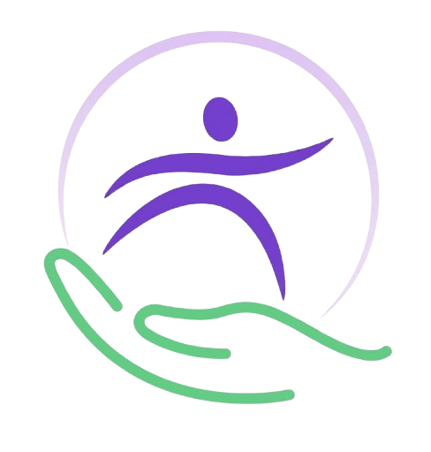
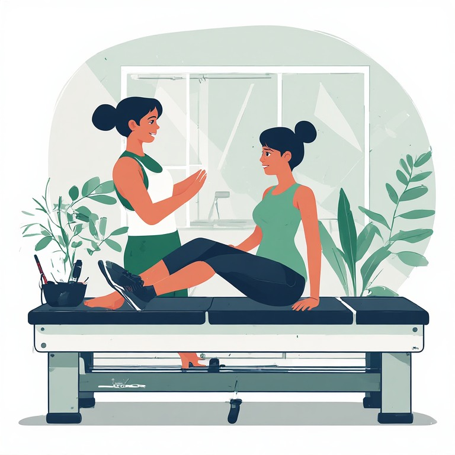
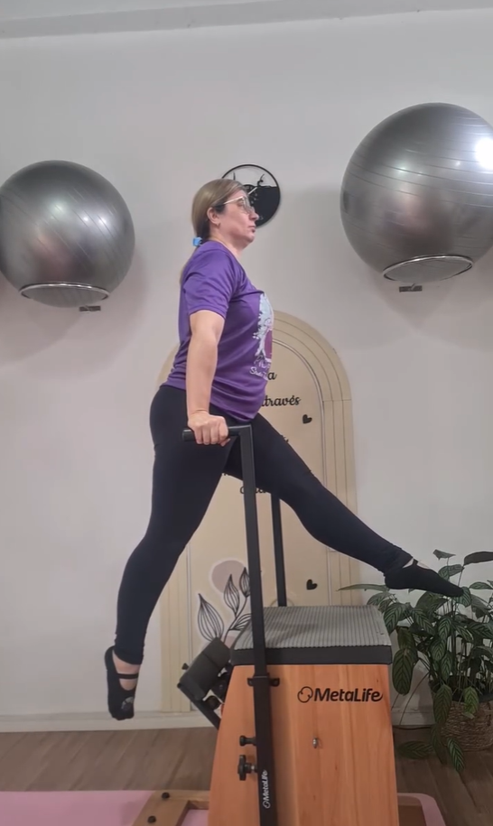
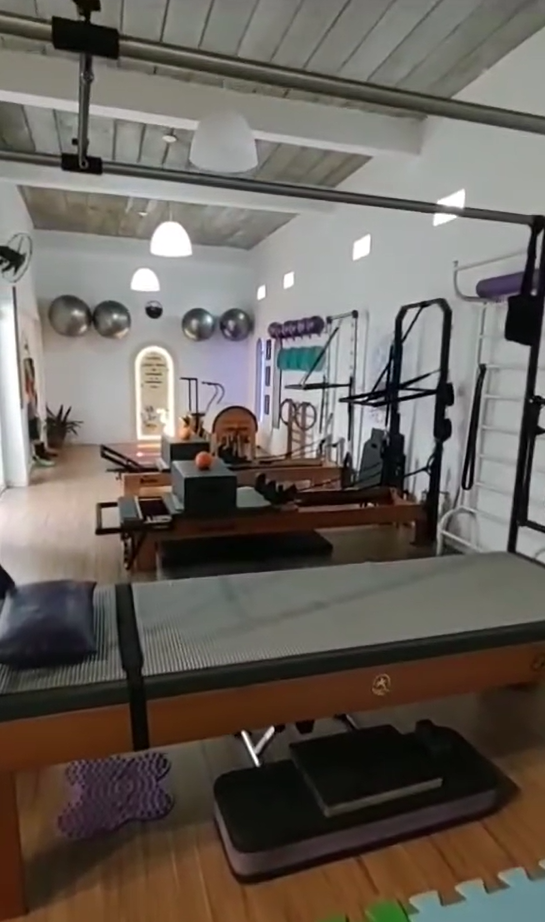
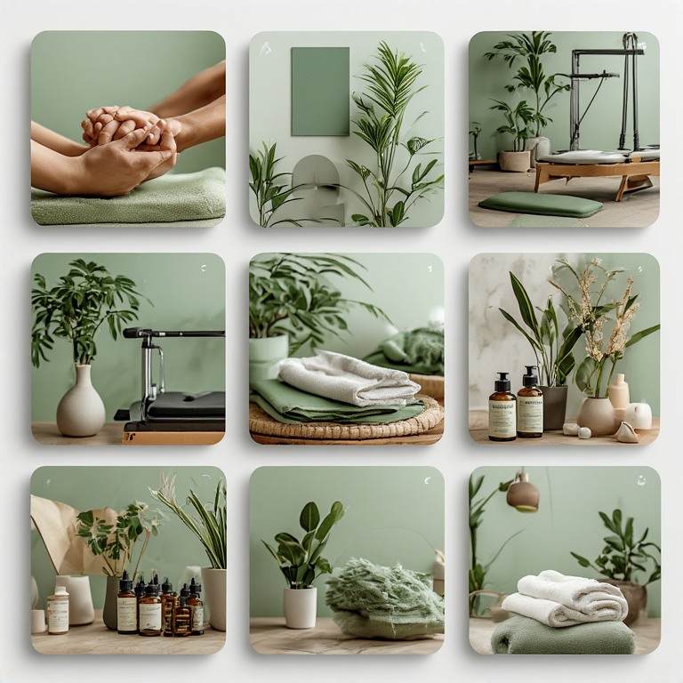
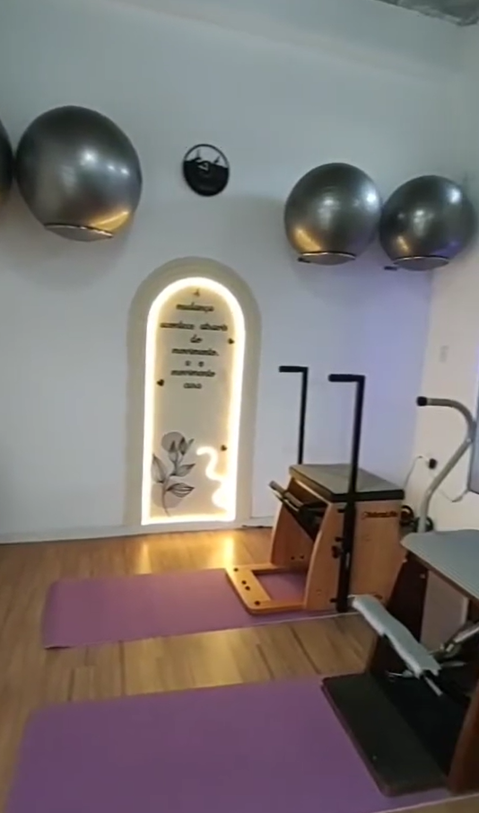

Avaliação
Entendimento da queixa, rotina, objetivos e histórico para orientar o plano de atendimento.

AgendarFisioterapia • Pilates • RPG • Acupuntura
Em Jardim Sulacap, em um ambiente climatizado, acessível e preparado para acompanhar sua evolução com cuidado profissional.
Como é o cuidado
Entendimento da queixa, rotina, objetivos e histórico para orientar o plano de atendimento.
Exercícios, técnicas e recursos aplicados conforme a necessidade de cada pessoa.
Acompanhamento da mobilidade, postura, força e conforto para ajustar o cuidado ao longo do processo.
Serviços

Aulas com orientação próxima, usando movimento como ferramenta para melhorar mobilidade, estabilidade e disposição no dia a dia.

Atendimento voltado à reabilitação física, melhora de dores, recuperação de movimentos e retorno gradual às atividades.

Reeducação postural global para trabalhar alinhamento, consciência corporal e redução de sobrecargas no corpo.

Técnica integrada ao cuidado em saúde, aplicada com atenção ao conforto, aos objetivos e à individualidade de cada paciente.
Estrutura
O Studio reúne ambiente climatizado, banheiro acessível e espaço adaptado para cadeira de rodas. A proposta é facilitar uma experiência confortável desde a chegada.

Para quem
Para quem busca reduzir desconfortos e melhorar a funcionalidade com acompanhamento profissional.
Para quem quer mais consciência corporal, amplitude de movimento e controle na rotina.
Para quem deseja manter uma prática regular de movimento, força e saúde física.
Avaliações
Ambiente super aconchegante, tudo novinho! Profissional incrível! Atenciosa e muito qualificada! Fiz pilates em toda gravidez e sou cliente de massagem relaxante. Super indico!
Thalita AlonsoSou imensamente grata ao Studio Tathiana Gomes e, principalmente, à Tathiana, que tem sido fundamental na minha caminhada de cuidado e recuperação.
Marcinha da Souza CassaroQue perfeito ter me deparado com uma profissional gentil, atenciosa e, acima de tudo, de extrema competência. Tathiana é uma fisioterapeuta maravilhosa.
Valeria AmorimAgendamento
Envie uma mensagem pelo WhatsApp para consultar horários e alinhar o melhor caminho para o seu atendimento.